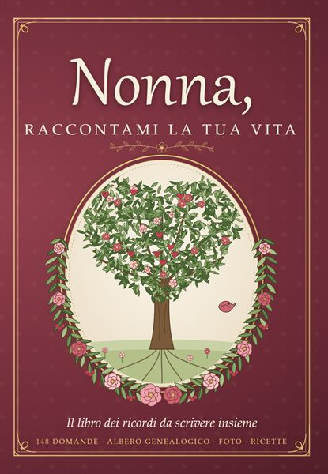
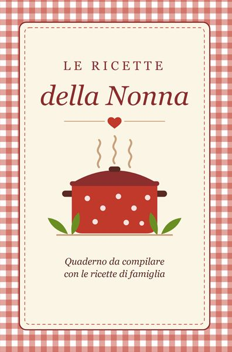
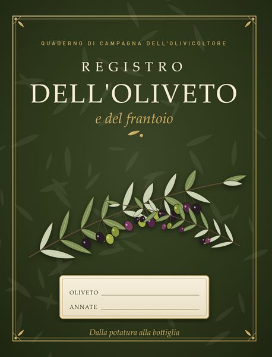
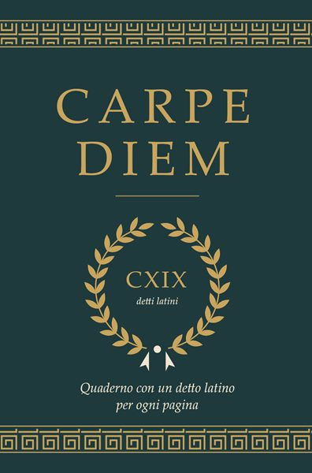
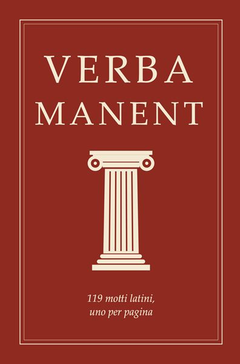

Officina Laerte è una piccola casa editrice di quaderni da compilare. Ogni libro nasce da una domanda semplice: cosa vale la pena scrivere a mano, per ricordarlo o per tramandarlo? Le ricette di casa, la storia della nonna, le bottiglie stappate con gli amici, le semine dell'orto seguendo la luna.
Mentre preparavamo i libri abbiamo costruito anche qualche strumento: un generatore di cartelle della tombola che rispetta le regole delle serie tradizionali, un estrattore per giocare senza sacchetto, la smorfia completa, il calendario delle fasi lunari del 2027 calcolato in ora italiana. Sono gratuiti, funzionano anche dal telefono e si stampano su un normale foglio A4.
Strumenti gratuiti
Generatore di cartelle della tombola
Serie complete da 6 cartelle con tutti i numeri da 1 a 90, pronte da stampare su A4, più il tabellone.
Genera le cartelle →Estrattore dei numeri
Il "banco" sullo schermo: estrae i numeri senza ripetizioni, con la smorfia e il tabellone aggiornato.
Apri l'estrattore →La smorfia napoletana
I 90 numeri con il loro nome in napoletano e il significato in italiano. Ricercabile e stampabile.
Consulta la smorfia →Calendario lunare 2027
Le fasi della luna mese per mese in ora italiana, con semine e lavori dell'orto. Anche da aggiungere al calendario.
Vedi le fasi lunari →Scheda di degustazione del vino
Vista, naso, bocca, abbinamenti e voto su un foglio A4 da stampare.
Stampa la scheda →Albero genealogico da compilare
Quattro generazioni, dai bisnonni a te, su un foglio A4.
Stampa l'albero →Scheda ricetta da stampare
Ingredienti, procedimento e segreti di famiglia, su una pagina A4.
Stampa la scheda →
I nostri libri
Quaderni stampati e rilegati, disponibili su Amazon.it.
 Tombola di Natale72 cartelle in 12 serie, 6 tabelloni, 90 numeri da ritagliare, la smorfia napoletana, regole, varianti e il quiz delle feste.Su Amazon →
Tombola di Natale72 cartelle in 12 serie, 6 tabelloni, 90 numeri da ritagliare, la smorfia napoletana, regole, varianti e il quiz delle feste.Su Amazon → Calendario lunare dell'orto 2027Le fasi lunari giorno per giorno in ora italiana, semine e trapianti, i lavori di ogni mese.Su Amazon →
Calendario lunare dell'orto 2027Le fasi lunari giorno per giorno in ora italiana, semine e trapianti, i lavori di ogni mese.Su Amazon → Quaderno di degustazione del vinoCopertina rigida, 100 schede guidate, la ruota degli aromi e le regioni del vino.Su Amazon →
Quaderno di degustazione del vinoCopertina rigida, 100 schede guidate, la ruota degli aromi e le regioni del vino.Su Amazon →
Nonna, raccontami la tua vita148 domande, l'albero genealogico, gli spazi per le foto e una lettera ai nipoti.Su Amazon →
Le ricette della NonnaIl quaderno da compilare con le ricette di famiglia, da tramandare.Su Amazon →
Registro dell'oliveto e del frantoioIl registro per annotare i lavori nell'oliveto e le giornate al frantoio.Su Amazon →- Registro dell'apiarioIl registro per tenere traccia delle visite e del lavoro nell'apiario.Su Amazon →

Carpe diemUn quaderno con un detto latino per pagina.Su Amazon →
Verba manent119 motti latini da leggere, scrivere e ricordare.Su Amazon →